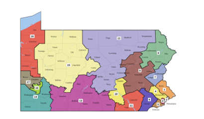

Overview of Redistricting and Gerrymandering
Reapportionment, Redistricting, and Gerrymandering, and can be confusing topics. Let this break it down for you.
The United States Congress is divided into two chambers - the Senate and the House of Representatives. In the Senate, each of the 50 states elects two members for a current total of 100 senators. Because the Senate is not a proportional body, the most populous state, California, earns 2 senators while the least populous state, Wyoming, also earns 2 senators. To balance this, the House of Representatives is designed as a proportional body, and its members are distributed among the states based on population, with California earning 53 representatives to Wyoming's 1. How does a state's representatives get chosen? They are elected from districts.
Each state is granted by the Constitution the ability to choose "the Times, Places and Manner of holding Elections for Senators and Representatives." While early in United States history this meant that states were solely responsible for deciding how representatives would be elected (and some states even chose not to use districts, instead electing representatives on statewide ballots), in modern times the redistricting process is governed by a complex web of Supreme Court decisions and federal law.
Who draws these districts has also changed significantly in the past few years. Traditionally, the state legislatures redistricted the states, but recent years have seen an uptick in independent commissions established, with the intention of removing politics from the process, and in theory, reducing gerrymandering. Currently, 6 states use independent commissions to draw their congressional districts, although the design for the commissions varies from state to state. In New Jersey, for example, the commission is designed to be bipartisan to an extreme, with each party nominating an equal number of members and an independent chair. By contrast, California's commission is composed of 4 intentionally unaffiliated members, along with the 5 Republicans and 5 Democrats. While this varied nature may be complicated, the frequency with which the states must redistrict is, since the 1960s, very straightforward.
Every 10 years, the census is taken to determine the population of every state and municipality, partially for reasons of benefit distribution, but also to reapportion the representatives proportionally across the country. The Constitution requires that each state have a minimum of one representative, but leaves the rest up to Congress to determine, including the size of the House and the method of reapportionment. The current size of the House is 435 members - the same number since 1911.
In the 1920s, Congress abdicated its duty and failed to pass a reapportionment act after the census of 1920, fearing a rise of urban districts over rural ones, and maintained the number of representatives at 435. In 1929, Congress passed a reapportionment bill that provided the methodology for shifting the fixed number of 435 representatives between the states based on shifting populations. This method was first established in the reapportionment of 1931, and has remained in effect until today. If the growth trend of Congress had continued, instead of being capped at 435, the House of Representatives would have about 700 members after the 2010 census.
Once Congress has reapportioned the 435 members it sends the new number of representatives to each state, whereupon the state draws the new districts. This typically happens on the second year of the decade, so the first election to use the districts reflective of the census population is the third year of the decade, or the year ending in -2. The first congress to see members elected from the new districts isn't until the fourth year of the decade, or the year ending in -3. Because there was no requirement of equally populated districts prior to 1964's Wesberry v. Sanders, many states would leave districts in place for two or three decades at a time.
Beside the standard of one person one vote, Congress and Supreme Court have mandated single member districts that are race aware in their conception (you can read more about these regulations here). Beyond these requirements, redistricting bodies must take into consideration a number of other value judgements, such as compactness, competitiveness, proportionality of the result, enhancing minority participation in minority-majority districts, contiguity, preservation of communities of interest, and maintenance of political subdivisions like counties or towns. Often, implementing one of these values comes at the expense of the others, so it is difficult to create maps that balance all of them.
This balance is hard to strike, not the least because many of these regulations have been put in place to combat a very real problem - gerrymandering. Gerrymandering is an insidious practice, and one that stands firmly opposed to the principles of democratic government - but identifying it, let alone fixing it, is a hard problem. The first gerrymander was born in Massachusetts, from a state senate district in the northeast part of the state. The governor at the time, Elbridge Gerry (pronounced Gary, not Jerry), helped draw the district to provide an advantage to his party, the Democratic-Republicans. Contemporary commentators likened the oddly shaped district to a salamander, and the combination with his name stuck.

The two components of the first gerrymander - an irregular district, and drawn for partisan advantage - have stuck with the definition of gerrymandering into the modern discourse. This explainer video on YouTube encourages voters to check their district's shape - and if it's strange looking, to assume partisan gerrymandering. Or this video from Vox, which argues that the shape of the districts gives a clear indication that it's been gerrymandered. The Daily Show defines gerrymandering as when "the politicians choose their voters, the voters don't choose them." John Oliver claims that gerrymandering "creates unfair advantages for whoever happens to be drawing the lines."
And for the most part, this is true. Gerrymandered districts do tend to be shaped strangely, and more often than not gerrymandered districts tend to be drawn to create partisan advantages. However, these definitions create strict lines that leave out some of the nuance essential in our national conversation of gerrymandering. Dave Wasserman, of the Cook Political Report and contributor for FiveThirtyEight, defines gerrymandering as "the drawing of political boundaries for the benefit of one party or group over another," a much milder definition. Not only does this definition allow for the very real and common problem of racial gerrymandering, but it also allows us to acknowledge the more legitimate uses of gerrymandering.
Consider the infamous "earmuffs district," Illinois" 4th Congressional District.

It certainly looks odd, and it is a gerrymandered district, but it's drawn in this strange way to group two predominantly Latinx neighborhoods into one district and keep the predominantly Black neighborhood in between them in a separate district. Both districts consistently vote Democratic - but the interests of the two minority communities may not be the same, so they are drawn into distinct districts to provide those communities with different representatives. That is not a bad thing, despite the odd shape that the district takes.
Consider next this map from Arizona.
Map of Arizona 2003-2013
The black district is the first district, and there is an odd looking notch cut into it from the (light blue) second district. Again, these are gerrymandered districts, but they were established first by the Arizona District Court and then again by the Arizona Independent Redistricting Commission to contain the Navajo and Hopi Native American tribes in separate districts, on the request of the tribes themselves. The current district map of Arizona has discontinued these districts, but again, on the suggestion of the tribes. It should serve as a good thing that the Native American population of Arizona is able to participate in deciding how they will be represented in Congress, despite any strange looking districts that result.
These examples should not be taken to mean that all gerrymandering is good - it is not. Racial gerrymanders intended to dilute the vote of Blacks or other minorities, without their input, is an abhorrent practice. Similarly, drawing districts to advantage one party over the other is nothing short of an undemocratic practice that aims to undermine the very principles of our republic. But using irregular geometry as the primary metric for identifying this problem is a misstep, and one that leaves us vulnerable to misunderstanding the fundamental problem.
Take Pennsylvania's old congressional map, redrawn by the Pennsylvania Supreme Court this year.
This map is a great example of a district scheme that is both unpleasant to view, with twisted districts spread across the state, and explicitly gerrymandered to favor the Republican Party. After appealing all the way to the Pennsylvania Supreme Court, the League of Women Voters finally won what they wanted - a new map, designed to more fairly distribute the Democratic and Republican voters across the state's 18 congressional districts.

The result is a map that is not only more fair, with the possibility of Democrats picking up multiple additional seats in the November midterms, but also results in neater, straighter lines. The association is not a correlation - the neat lines are not the reason for the fairness, as this article, and the FiveThirtyEight Atlas of Redistricting (consider the Massachusetts current boundaries compared to the Democratic gerrymander) helps demonstrate - but the result is nevertheless more pleasant, and more importantly, it creates a fairer map that more closely adheres to the republican form of government guaranteed to each state by the constitution.